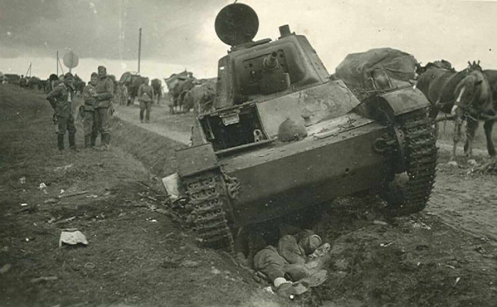

Дети на войне
Она выжила в «Саласпилсе»
В четыре года Полина стала узницей лагеря смерти «Саласпилс»
В четыре года Полина стала узницей лагеря смерти «Саласпилс». Здесь не делали скидку на возраст. Детей использовали как подопытных кроликов при проведении медицинских экспериментов. Донорами крови для фашистских солдат становились даже младенцы. Маленькая Полина выжила. Но она еще не знала, что за «Саласпилсом» последуют новые испытания.
–Наша семья жила в деревне Медведи Дриссенского района, теперь это Верхне-двинский район. Родители работали в колхозе, папа был бригадиром, – вспоминает Полина Александровна Кособуцкая, в девичестве Гендик. – Когда началась война, отца забрали на фронт. В 1943 году он заболел тифом и его отправили домой.
–Наша семья жила в деревне Медведи Дриссенского района, теперь это Верхне-двинский район. Родители работали в колхозе, папа был бригадиром, – вспоминает Полина Александровна Кособуцкая, в девичестве Гендик. – Когда началась война, отца забрали на фронт. В 1943 году он заболел тифом и его отправили домой.
В округе действовали партизанские бригады, и озверевшие оккупанты мстили мирным жителям. В марте 1943-го в Медведи нагрянули каратели. Стариков и инвалидов согнали в сарай и подожгли. В огне погиб мой дядя – участник финской войны. У него не было ноги.
Остальных погнали в Дриссу, а затем в товарном составе с крохотными зарешеченными окошками отправили в Ригу. Людей в вагоне было много, приходилось ехать стоя. Когда поезд тронулся, все прильнули к щелям – смотрели, куда нас везут. Многие плакали. Я прижалась к маме и молчала.
Нас привезли в Саласпилс, расположенный в 17 километрах от Риги. Всех раздели. Помещение было очень большое, пол цементный. Облили холодной водой, надели робы и отправили в лагерь. Женщинам отрезали волосы. У мамы была длинная коса. Взрослые каждый день ходили на работу. Дети сидели в отдельных бараках. Старшие присматривали за младшими. Многие еще не умели ходить, поэтому ползали по нарам – трехъярусным кроватям, застеленным соломой. На обед – суп из капусты, в котором плавали черви. Вместе со мной и родным братом Владимиром, который старше меня на два года, в саласпилсском лагере оказался и двоюродный брат Федор. Его отец погиб на фронте, а мама умерла.
Провожать Полину (вторая слева) на учебу в мединститут пришла вся семья. 1959 год
Иногда нас забирали на процедуры. Кровь отправляли в госпитали, где лечили фашистских солдат. Никаких усиленных пайков для восстановления сил не было. Ребят покрепче отдавали на усыновление. Причем приемным родителям говорили: дети – сироты. Моего брата забрал немец по фамилии Конрад. У него был двух-этажный особняк в Риге. Володе купили шикарный по тогдашним меркам костюм, часы, отправили учиться в школу. А когда приемный отец узнал, что наши родители живы, приехал к ним за разрешением на усыновление. Такого разрешения не получил, но по-прежнему заботился о Володе как о родном. А когда Конрад засобирался в Германию, привез брата в Саласпилс и вернул родителям.
Через пару месяцев нашу семью отправили сначала в концлагерь «Юнфрево», а затем в концлагерь «Бешесофин» в Австрии. Родители работали на железной дороге. Я была совсем измождена. Не могла ни ходить, ни сидеть. Началось двустороннее воспаление легких.
Выходили меня монахини какого-то монастыря. Я лежала, а они ставили на кровать специальную подставку для тарелки и кормили с ложечки. Заново в мои почти шесть лет пришлось учиться ходить.
Освободили нас американцы в мае 1945 года. Они раздавали узникам соевую муку, яичный порошок, а детям конфеты – леденцы в трубочке. Три месяца, в ожидании отправки домой, пришлось жить на улице, просить милостыню. Везли нас на пароходе. У меня сильно кружилась голова, постоянно тошнило. Вместе с нами с фронта возвращались советские солдаты. Они подарили брату мандолину, а я для них танцевала. Ожила.
На занятиях в Бигосовской школе (Полина справа на первой парте)
Вместе с братом и мамой остановились у родственников в Латвии. Папа уехал в Одессу – восстанавливать заводы. Однажды ночью пришли бандиты. Уложили взрослых на пол и хотели расстрелять. Мы плакали и просили не делать этого. Тогда визитеры разломали ухваты, которые стояли у печки, и стали ими избивать, дедушке сломали ногу, бабушке – руку. Потом ушли, предупредив, что следующий раз расстреляют всех.
Наутро сосед на лошади отвез нас в Белоруссию. Поселились у родственников в деревне Стаклы Верхнедвинского района. В доме народа много, продуктов и одежды у нас не было. Собирали мерзлую картошку на поле, летом варили щавель, крапиву. Заедали вши. Чтобы избавится от насекомых, мама где-то нашла каустическую соду, кости павших животных и сварила мыло. Вместо мочалки использовали огуречник – длинные тягучие стебли вымачивали и теребили, как лен.
Ближайшая школа – в Бигосово, за четыре километра. Тетрадей не было, мама покупала их на рынке или выменивала на что-либо.
Вместо ручек – перья, вместо чернил – свекольный сок. Позже появились чернила в стеклянных бутылочках и чернильницы-невыливайки.
На пути в школу – лес и глубокий овраг. Зимой старшие ребята тащили меня за руки по сугробам. А однажды шла одна, выбилась из сил и стала замерзать. Еле живую меня нашли местные жительницы, которые ехали на лошади. Привезли в первый с краю деревенский дом, согрели, напоили чаем.
Отец нашел меня лишь в 1944-м
Мы не разлучались до конца войны. Командиры долго не рассказывали ему, что его семьи больше нет, а дочь осталась сиротой. Они боялись, что папа не выдержит такой удар. Но мысль, что я жива, помогла ему справиться с душераздирающей болью. Войну он закончил в должности инструктора-парторганизатора по Червенской партизанской зоне.
Мы поселились в комнатке в Минске, на Горького, в бараке, который фашисты построили для рабочих. В кухоньке было не повернуться, но после лесных убежищ она казалась просторной. Город был разрушен, на улице Советской (нынешний проспект Независимости. – Прим. «ЗН») уцелели только Дом Правительства, здание электростанции возле Свислочи, корпус 1-й клинической больницы, Академия наук и Дом печати.
Возле заводов имени Кирова и Ворошилова на свободном участке земли соорудили трибуну: 16 июля 1944 здесь проходил парад Минского партизанского соединения. На площади собрались тысячи минчан с цветами. Дети и молодежь взбирались на крыши бараков, чтобы лучше видеть колонны партизан. В них шли и мы с отцом.